GitHub & VS Code Instructions
- If you haven't already, install VS Code
- Install Git - https://git-scm.com/
- Log in to GitHub - https://github.com/
- Sign in to Git Hub on VS Code - Bottom Left Corner
Choose Sign in with Github
Allow GitHub to access your VSCode

- Find the repository you want to contribute to on GitHub
E.g. https://github.com/a-keyter/WebsiteThemeGenerator

- Click on 'Code' in the right hand corner:
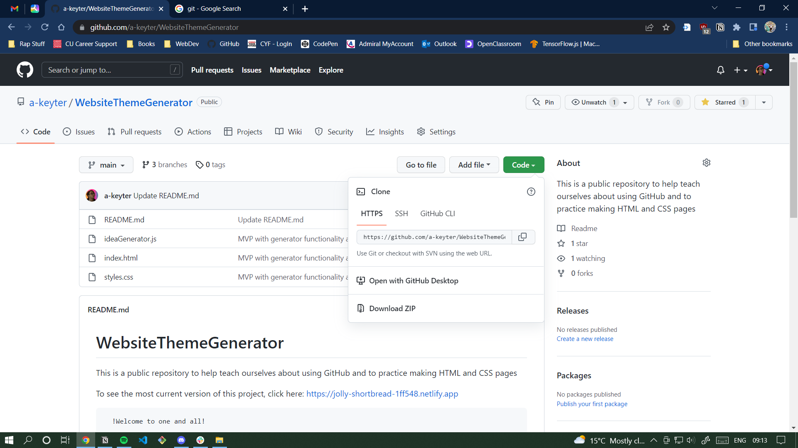
- Copy the HTTPS link / URL from Github
- Open VS Code
(If you need to close last folder, push 'ctrl' + 'k' and then 'f')
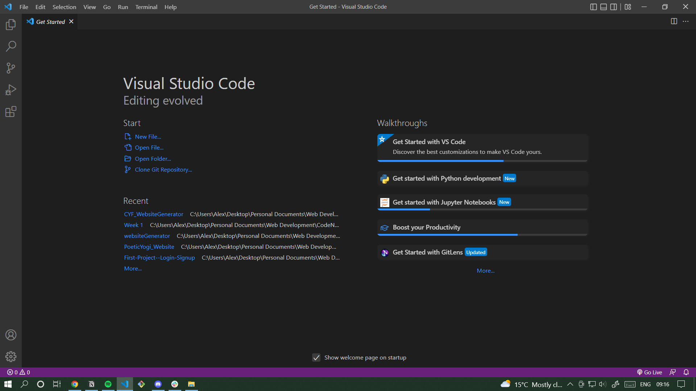
- Under 'Start' click on 'Clone Git Repository'
- Paste in the URL you copied from the GitHub repository:
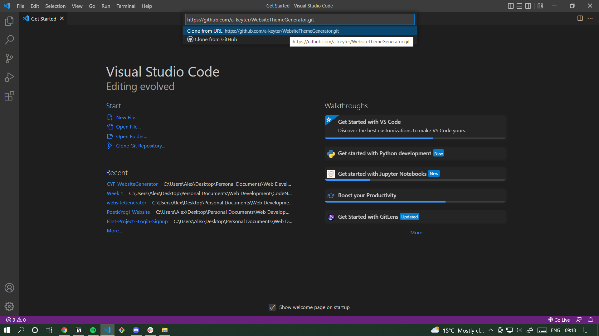
- Create a new folder to store your copy of the repository:
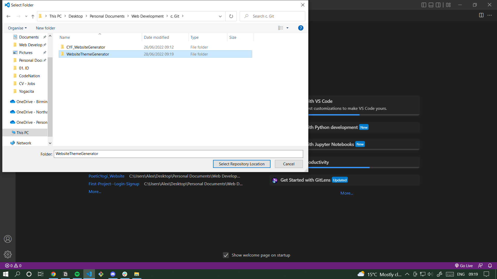
- When the repository has been downloaded,
Click 'Open' in the bottom right corner
- Congratulations, you have just cloned your first repository!
- With the repository open - go to Source Control
ctrl + shift + g, then g
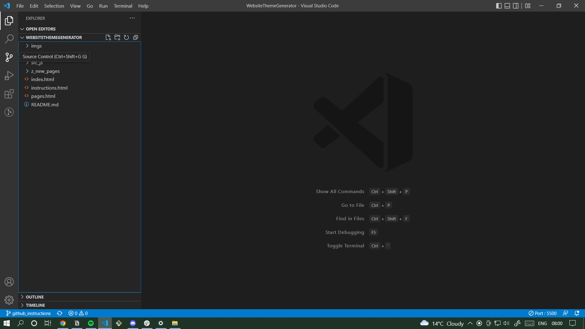
- Go to branches on the bottom left corner and click + add new branch
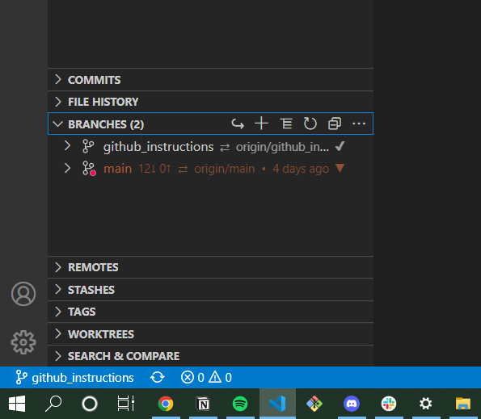
- Create a branch with your name and the type of page you want to make
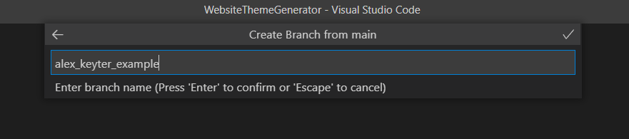
- With the repository open - go to Source Control
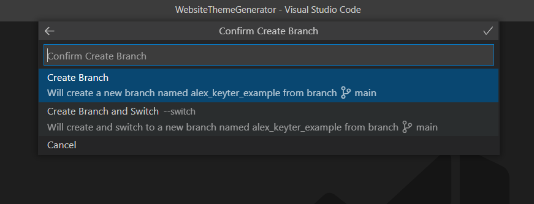
- Click on Create Branch and Switch
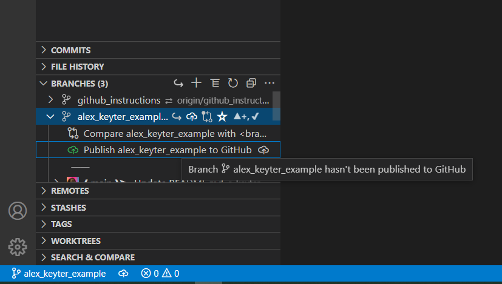
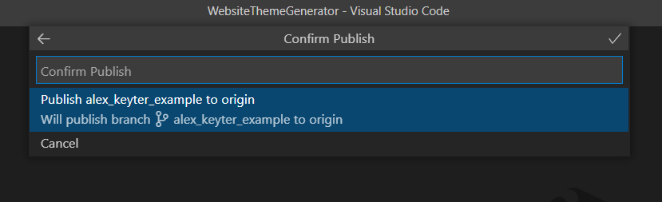
- Return to the explorer and right click on the folder z_new_pages
Then click on new file
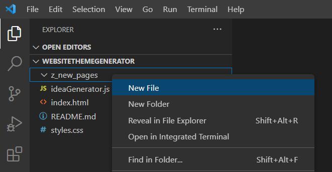
- Create 2 new files with the name of your pages
One should be a .html and the other a .css
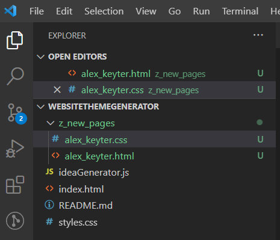
- Next, go back to version control
Type a message that describes the changes you've made and
Then click the tick to 'commit' them to your branch.
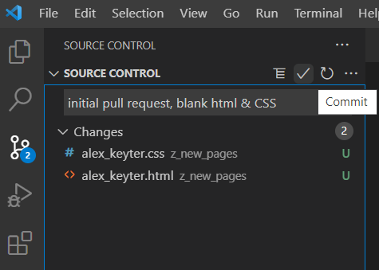
- Agree to stage all your changes and commit them
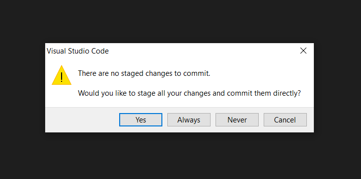
- Click: Sync Changes to put your new changes into your branch
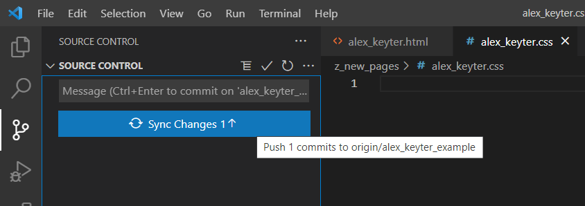
- Now you are ready to make your first pull request
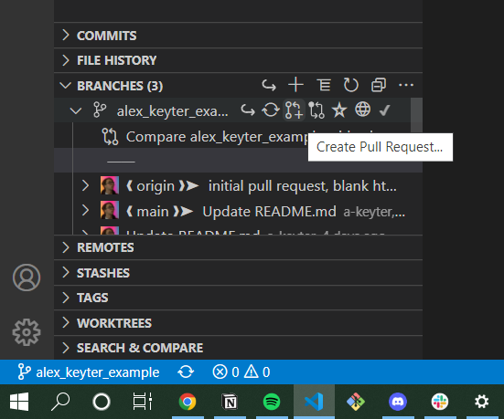
- Give a title and description to your pull request, detailing the changes you have made.
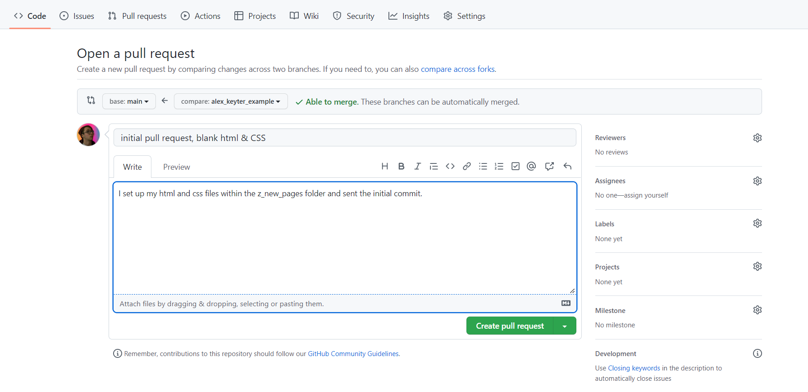
- Congratulations, you have made your first pull request!